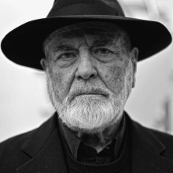

Il movimento nasce in aperta polemica con l'arte tradizionale, della quale rifiuta tecniche e supporti per fare ricorso, appunto, a materiali "poveri" come terra, legno, ferro, stracci, plastica, scarti industriali, con l'intento di
evocare le strutture originarie del linguaggio della società contemporanea dopo averne corroso abitudini e conformismi semantici.
L'obiettivo di questi artisti era quello di superare l'idea tradizionale secondo cui l'opera d'arte occupa un livello di realtà sovratemporale e trascendente.